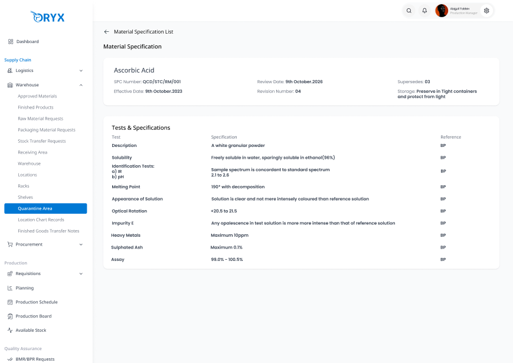
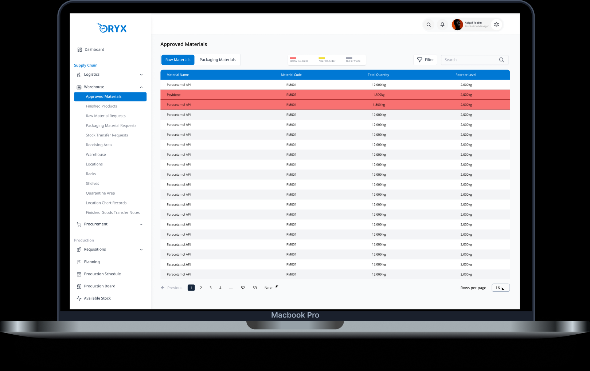
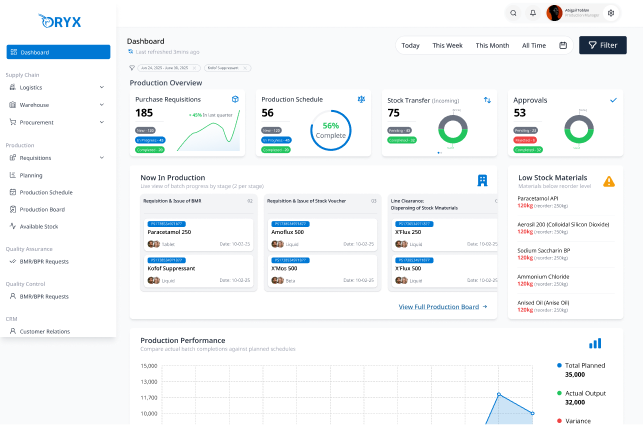
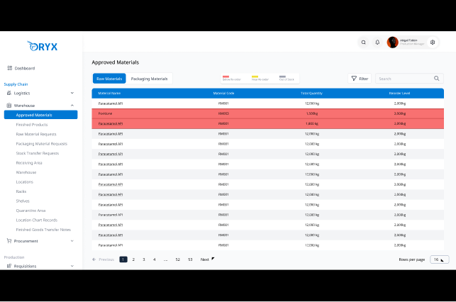
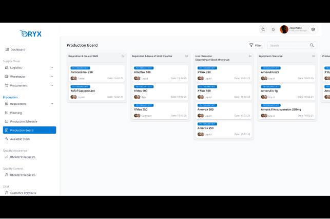

Oryx ERP System
I was the sole UX designer on Oryx, an ERP system for a pharmaceutical manufacturer in Accra, working with a team of five to deliver the first live version in one year. A previous ERP had failed because it never fit the company’s pharmaceutical workflows, and staff had gone back to paper. I began by recording audio interviews with managers, lab staff, and floor workers, which showed me the real pain points were about trust as much as process. I then designed every module around their actual workflows instead of a generic ERP template, and designed Warehouse, Production, and Procurement together because they depend on each other. My work included the production dashboard and board, the warehouse material views, the QA and QC module, and a form builder that lets QA managers create test templates for each batch type. The system is live and in active use.
Case Study01/05
A team of 5. Average Aged 24. Built in a year.
01
THE PROBLEM
A previous ERP had failed — poor customization, a time-zone support gap, and a system that never truly fit their pharmaceutical workflows. They returned to paper. Our job was not just to build software. It was to rebuild trust in a digital system.
02
THE CONSTRAINT
A workable system within 12 months, with a team nobody expected to pull it off. Pharmaceutical manufacturing means precision — dosage calculations, batch tolerances, regulatory traceability. Errors in QA/QC are not UX failures. They are safety failures
03
THE APPROACH
Audio-recorded stakeholder sessions with managers and floor staff. Every module designed around their actual workflow, not a generic ERP template. Warehouse, Production, and Procurement designed together — because they depend on each other to function.
RESEARCH
Stakeholder Interviews
Audio recordings with managers, lab staff, and floor workers surfaced the real pain points — not just process gaps, but trust gaps
"The old system couldn't handle our batch sizes. We just went back to writing things down."
— Production Manager
"When something goes wrong in QC we need to trace it back fast. The previous system made that impossible."
— QA Supervisor
"Support calls to India at midnight just stopped happening. We gave up on the system eventually."
— Operations Lead
"We need the numbers to tally. If warehouse says 400 units, production should see 400 units."
— Warehouse Manager
SELECTED SCREENS01/02

01
QA & QC MODULE
Every test result is validated against calculated batch tolerances. Designing this required working directly with lab managers to understand acceptable ranges — and then making those ranges visible at a glance without overwhelming the technician running the test.
The hardest design problem: math accuracy in a medical context
02
Warehouse → Production flow
Stock levels in Warehouse trigger procurement alerts and feed directly into production scheduling. Designing these three modules required a shared data model and clear visual feedback whenever quantities were low, pending, or out of tolerance.
Why: interconnected flows had to tally end-to-end.




REFLECTION
Still iterating. Still learning.
The system is live and in active use. The biggest lesson was designing for trust after a previous failure — every screen had to feel reliable, not just functional. If I were starting over I would push for a formal design system from week one rather than building one retroactively. The QA and QC modules taught me that precision and clarity are not in conflict — a well-laid-out form communicates exactness better than one that tries to hide its complexity.